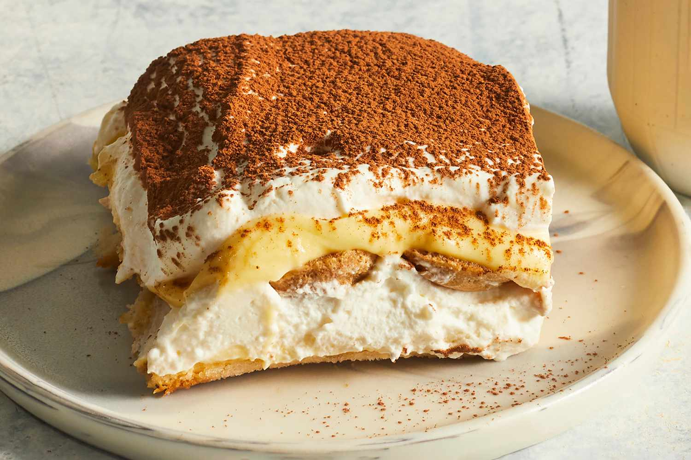

Tiramisu

Description
Tiramisu is a classic Italian layered dessert with rum-flavored, coffee-soaked ladyfingers, a creamy mascarpone custard, and whipped cream. This tiramisu recipe is easy to make at home for an impressive no-bake dessert.
Ingredients
- Egg Yolks
- Sugar
- Milk
- Cream
- Vanilla
- Marscarpone
- Coffee
- Rum
- Ladyfingers
- Cocoa Powder
Recipe Steps
- Make the filling.
- Make the whipped cream.
- Soak the Ladyfingers.
- Assemble the Tiramisu.